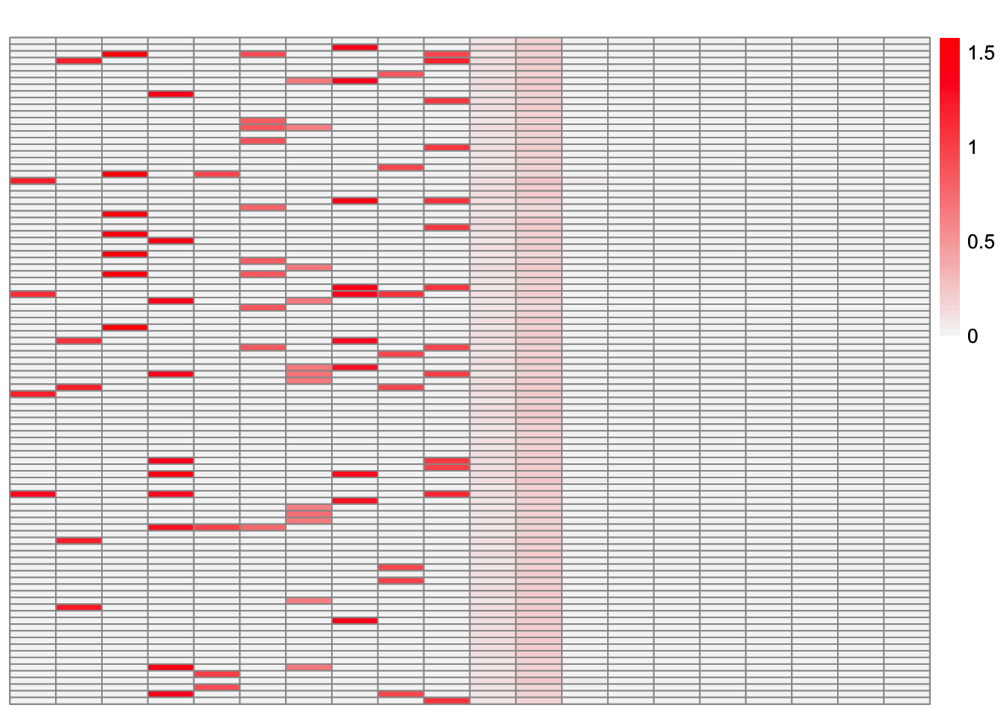
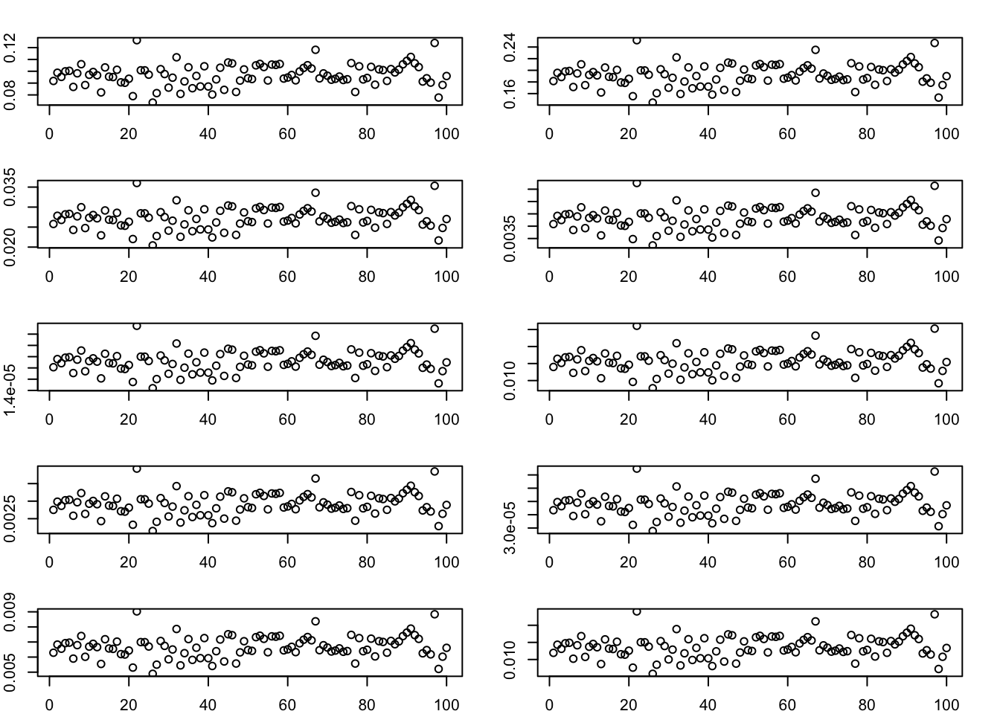
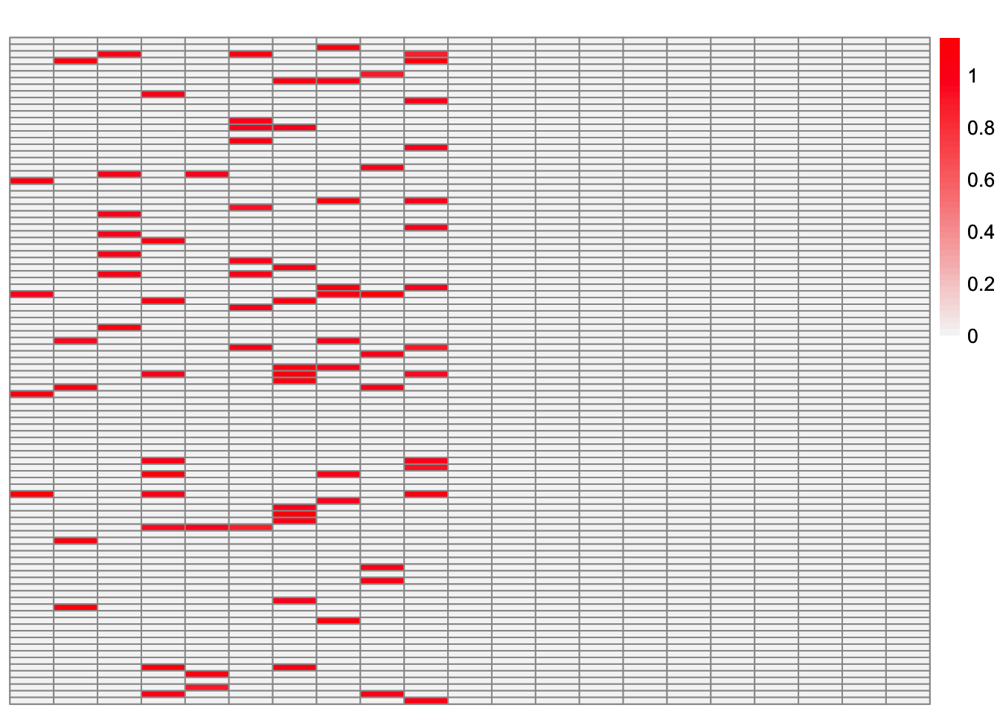

sparse_overlapping_ebmfcov
Annie Xie
2025-09-17
Last updated: 2025-09-17
Checks: 7 0
Knit directory: covariance_decomps_dsc/
This reproducible R Markdown analysis was created with workflowr (version 1.7.1). The Checks tab describes the reproducibility checks that were applied when the results were created. The Past versions tab lists the development history.
Great! Since the R Markdown file has been committed to the Git repository, you know the exact version of the code that produced these results.
Great job! The global environment was empty. Objects defined in the global environment can affect the analysis in your R Markdown file in unknown ways. For reproduciblity it’s best to always run the code in an empty environment.
The command set.seed(20250203) was run prior to running
the code in the R Markdown file. Setting a seed ensures that any results
that rely on randomness, e.g. subsampling or permutations, are
reproducible.
Great job! Recording the operating system, R version, and package versions is critical for reproducibility.
Nice! There were no cached chunks for this analysis, so you can be confident that you successfully produced the results during this run.
Great job! Using relative paths to the files within your workflowr project makes it easier to run your code on other machines.
Great! You are using Git for version control. Tracking code development and connecting the code version to the results is critical for reproducibility.
The results in this page were generated with repository version 19357c9. See the Past versions tab to see a history of the changes made to the R Markdown and HTML files.
Note that you need to be careful to ensure that all relevant files for
the analysis have been committed to Git prior to generating the results
(you can use wflow_publish or
wflow_git_commit). workflowr only checks the R Markdown
file, but you know if there are other scripts or data files that it
depends on. Below is the status of the Git repository when the results
were generated:
Ignored files:
Ignored: .DS_Store
Ignored: .Rhistory
Ignored: data/.DS_Store
Ignored: data/adclus_cov_comp_dsc_ex/.DS_Store
Ignored: data/adclus_same_init_dsc_ex/.DS_Store
Ignored: data/pt_laplace_split_init_ex/.DS_Store
Note that any generated files, e.g. HTML, png, CSS, etc., are not included in this status report because it is ok for generated content to have uncommitted changes.
These are the previous versions of the repository in which changes were
made to the R Markdown
(analysis/sparse_overlapping_ebmfcov.Rmd) and HTML
(docs/sparse_overlapping_ebmfcov.html) files. If you’ve
configured a remote Git repository (see ?wflow_git_remote),
click on the hyperlinks in the table below to view the files as they
were in that past version.
| File | Version | Author | Date | Message |
|---|---|---|---|---|
| Rmd | 19357c9 | Annie Xie | 2025-09-17 | Add exploration of EBMFcov with large K in overlap setting |
Introduction
In previous analyses, I observed that the estimate from EBMFcov in
the sparse overlapping setting would have extra factors which are
essentially trivial, especially when EBMFcov was given a larger
Kmax value. So this analysis is dedicated to investigating
why that happens.
library(dplyr)
library(ggplot2)
library(pheatmap)
library(flashier)source('code/visualization_functions.R')compute_L2_fit <- function(est, dat, with_diag = FALSE){
if (with_diag == FALSE){
score <- sum((dat - est)^2) - sum((diag(dat) - diag(est))^2)
}
else{
score <- sum((dat - est)^2)
}
return(score)
}permute_L <- function(est, truth){
K_est <- ncol(est)
K_truth <- ncol(truth)
n <- nrow(est)
#if estimates don't have same number of columns, try padding the estimate with zeros and make cosine similarity zero
if (K_est < K_truth){
est <- cbind(est, matrix(rep(0, n*(K_truth-K_est)), nrow = n))
}
if (K_est > K_truth){
truth <- cbind(truth, matrix(rep(0, n*(K_est - K_truth)), nrow = n))
}
#normalize est and truth
norms_est <- apply(est, 2, function(x){sqrt(sum(x^2))})
norms_est[norms_est == 0] <- Inf
norms_truth <- apply(truth, 2, function(x){sqrt(sum(x^2))})
norms_truth[norms_truth == 0] <- Inf
est_normalized <- t(t(est)/norms_est)
truth_normalized <- t(t(truth)/norms_truth)
#compute matrix of cosine similarities
cosine_sim_matrix <- abs(crossprod(est_normalized, truth_normalized))
assignment_problem <- lpSolve::lp.assign(t(cosine_sim_matrix), direction = "max")
perm <- apply(assignment_problem$solution, 1, which.max)
return(est[,perm])
}True Loadings
group_overlap_1 <- readRDS('data/group_overlap_1.rds')This is a heatmap of the true loadings matrix:
plot_heatmap(group_overlap_1$true_L)
EBMFcov given 2K
group_overlap_1_ebmfcov_diag_3 <- readRDS("data/adclus_cov_comp_dsc_2k_ex/group_overlap_1_ebmfcov_diag_3.rds")ebmfcov_L_permuted <- permute_L(group_overlap_1_ebmfcov_diag_3$est_L, group_overlap_1$true_L)This is a heatmap of the estimated loadings matrix:
plot_heatmap(ebmfcov_L_permuted)
This is the correlation matrix:
ebmfcov_corr_mat <- cor(ebmfcov_L_permuted, group_overlap_1$true_L)
ebmfcov_corr_mat [,1] [,2] [,3] [,4] [,5]
[1,] 0.99838488 -0.04675366 -0.0559113424 0.115133708 -0.04159937
[2,] -0.04678197 0.99898951 -0.0628769798 -0.076394637 -0.04678197
[3,] -0.05597965 -0.06291569 0.9996045513 -0.091414380 0.13803629
[4,] 0.09657288 -0.07640333 -0.0913685232 0.999103118 0.08959747
[5,] -0.04163366 -0.04679219 0.1435050701 0.103457465 0.99920781
[6,] -0.06795098 -0.07637030 0.1845557482 -0.010976655 0.08512196
[7,] -0.07531008 -0.08464123 -0.1012199929 0.190775533 -0.07531008
[8,] 0.10373386 0.07165588 -0.0913776735 -0.003360644 -0.06798716
[9,] 0.14855811 0.10055224 -0.0807713647 0.022933988 -0.06009582
[10,] 0.08666148 0.06269616 -0.0008835456 0.174611883 -0.07876133
[11,] 0.24952777 0.18615820 -0.3679372421 -0.099223284 -0.26769852
[12,] 0.24995533 0.18604164 -0.3674221704 -0.099464528 -0.26726609
[13,] 0.25033623 0.18593677 -0.3669602657 -0.099679758 -0.26687845
[14,] 0.25071084 0.18583168 -0.3665041548 -0.099890173 -0.26649650
[15,] 0.25229936 0.18523310 -0.3646909969 -0.100561753 -0.26507485
[16,] 0.25104594 0.18573589 -0.3660947499 -0.100077127 -0.26615445
[17,] 0.25140835 0.18563050 -0.3656504053 -0.100278116 -0.26578397
[18,] 0.25298375 0.18502409 -0.3638412246 -0.100936093 -0.26436882
[19,] 0.25172766 0.18553572 -0.3652579443 -0.100453586 -0.26545764
[20,] 0.25221496 0.18538905 -0.3646558002 -0.100720677 -0.26495761
[,6] [,7] [,8] [,9] [,10]
[1,] -0.067931487 -0.07525609 0.088355700 0.11272896 0.08452569
[2,] -0.076394637 -0.08463177 0.063506138 0.10322838 0.04954426
[3,] 0.171979368 -0.10127099 -0.091414380 -0.08086989 0.01268033
[4,] -0.008082055 0.18845065 0.007456802 0.02308907 0.16077309
[5,] 0.103457465 -0.07531812 -0.067987480 -0.06014524 -0.07884284
[6,] 0.998671325 -0.02047142 -0.110963481 -0.09816404 0.07955763
[7,] -0.025321848 0.99910118 0.082985535 -0.10879523 -0.04696601
[8,] -0.111022575 0.07647173 0.999203175 0.02582038 0.07996350
[9,] -0.098136061 -0.10871743 0.038156114 0.99838672 -0.11380515
[10,] 0.051883521 -0.05412207 0.070945206 -0.11378100 0.99813820
[11,] -0.318968292 -0.03528806 0.062644948 -0.08422397 -0.02097220
[12,] -0.318517595 -0.03562005 0.062344859 -0.08435256 -0.02127183
[13,] -0.318113411 -0.03591664 0.062076420 -0.08446716 -0.02153953
[14,] -0.317715161 -0.03620764 0.061811882 -0.08457884 -0.02180264
[15,] -0.316252047 -0.03723703 0.060752779 -0.08490092 -0.02279500
[16,] -0.317358523 -0.03646717 0.061574864 -0.08467773 -0.02203772
[17,] -0.316972238 -0.03674715 0.061318085 -0.08478370 -0.02229176
[18,] -0.315515068 -0.03776330 0.060264759 -0.08509705 -0.02327421
[19,] -0.316632042 -0.03699269 0.061091650 -0.08487585 -0.02251507
[20,] -0.316110645 -0.03736743 0.060745021 -0.08501578 -0.02285621This is the diagonal of the correlation matrix:
diag(ebmfcov_corr_mat) [1] 0.9983849 0.9989895 0.9996046 0.9991031 0.9992078 0.9986713 0.9991012
[8] 0.9992032 0.9983867 0.9981382These are plots of the factors which appear to be trivial:
par(mfrow = c(5, 2), mar = c(2, 2, 2, 2))
for (i in c(11:20)){
plot(ebmfcov_L_permuted[,i])
}
par(mfrow = c(1, 1))Interestingly, all of these factors appear to be essentially the same; they are just on different scales.
This is the correlation matrix of these factors:
cor(ebmfcov_L_permuted[,c(11:20)]) [,1] [,2] [,3] [,4] [,5] [,6] [,7]
[1,] 1.0000000 0.9999974 0.9999908 0.9999803 0.9999016 0.9999676 0.9999503
[2,] 0.9999974 1.0000000 0.9999980 0.9999920 0.9999307 0.9999833 0.9999703
[3,] 0.9999908 0.9999980 1.0000000 0.9999980 0.9999524 0.9999929 0.9999838
[4,] 0.9999803 0.9999920 0.9999980 1.0000000 0.9999697 0.9999984 0.9999931
[5,] 0.9999016 0.9999307 0.9999524 0.9999697 1.0000000 0.9999818 0.9999914
[6,] 0.9999676 0.9999833 0.9999929 0.9999984 0.9999818 1.0000000 0.9999982
[7,] 0.9999503 0.9999703 0.9999838 0.9999931 0.9999914 0.9999982 1.0000000
[8,] 0.9998440 0.9998813 0.9999103 0.9999349 0.9999934 0.9999535 0.9999701
[9,] 0.9999320 0.9999558 0.9999727 0.9999854 0.9999968 0.9999935 0.9999986
[10,] 0.9998984 0.9999281 0.9999503 0.9999681 0.9999995 0.9999808 0.9999908
[,8] [,9] [,10]
[1,] 0.9998440 0.9999320 0.9998984
[2,] 0.9998813 0.9999558 0.9999281
[3,] 0.9999103 0.9999727 0.9999503
[4,] 0.9999349 0.9999854 0.9999681
[5,] 0.9999934 0.9999968 0.9999995
[6,] 0.9999535 0.9999935 0.9999808
[7,] 0.9999701 0.9999986 0.9999908
[8,] 1.0000000 0.9999817 0.9999938
[9,] 0.9999817 1.0000000 0.9999967
[10,] 0.9999938 0.9999967 1.0000000This is the ELBO:
group_overlap_1_ebmfcov_diag_3$fit_obj$fl$elbo[1] 15263.48This is the L2 norm of the difference between the observed Gram matrix and estimated Gram matrix (not including diagonal entries):
compute_L2_fit(group_overlap_1_ebmfcov_diag_3$est_LLt, group_overlap_1$data$YYt)[1] 30.50358This is the L2 norm of the difference between the observed Gram matrix and estimated Gram matrix (including diagonal entries):
compute_L2_fit(group_overlap_1_ebmfcov_diag_3$est_LLt, group_overlap_1$data$YYt, with_diag = TRUE)[1] 131.7679These are the KL divergences for the factors:
group_overlap_1_ebmfcov_diag_3$fit_obj$fl$flash_fit$KL[[1]]
[1] -19.939557 -11.249433 -3.677941 -23.479015 -11.672688 -11.626732
[7] 14.406079 13.422158 9.245255 1.156878 34.657354 34.657353
[13] 34.597726 34.598163 34.598174 34.598270 34.598495 34.598832
[19] 34.599393 34.600050
[[2]]
[1] -19.939969 -11.249503 -3.678080 -23.477784 -11.672666 -11.626947
[7] 14.406082 13.422061 9.245261 1.156900 34.657359 34.657359
[13] 34.629869 34.628398 34.630394 34.630684 34.630535 34.630840
[19] 34.630910 34.631031Test different numbers of factors
cov_fit <- function(covmat, ebnm_fn = ebnm::ebnm_point_laplace, Kmax = 1000, verbose.lvl = 0, backfit = TRUE) {
fl <- flash_init(covmat, var_type = 0) %>%
flash_set_verbose(verbose.lvl) %>%
flash_greedy(ebnm_fn = ebnm_fn, Kmax = Kmax)
if (backfit == TRUE){
fl <- flash_backfit(fl)
}
s2 <- max(0, mean(diag(covmat) - diag(fitted(fl))))
s2_diff <- Inf
while(s2 > 0 && abs(s2_diff - 1) > 1e-4) {
covmat_minuss2 <- covmat - diag(rep(s2, ncol(covmat)))
fl <- flash_init(covmat_minuss2, var_type = 0) %>%
flash_set_verbose(verbose.lvl) %>%
flash_greedy(ebnm_fn = ebnm_fn, Kmax = Kmax)
if (backfit == TRUE){
fl <- flash_backfit(fl)
}
old_s2 <- s2
s2 <- max(0, mean(diag(covmat) - diag(fitted(fl))))
s2_diff <- s2 / old_s2
}
return(list(fl=fl, s2 = s2))
}K=21
In this section, I try fitting EBMFcov with Kmax=21:
ebmfcov_fit_k21 <- cov_fit(group_overlap_1$data$YYt, ebnm_fn = ebnm::ebnm_generalized_binary, Kmax = 21, backfit = TRUE)
fl_scaled <- ldf(ebmfcov_fit_k21$fl)
L_scaled <- fl_scaled$L %*% diag(sqrt(fl_scaled$D))This is the number of factors in the fit:
ebmfcov_fit_k21$fl$n_factors[1] 21ebmfcov_k21_L_permuted <- permute_L(L_scaled, group_overlap_1$true_L)This is a heatmap of the estimated loadings matrix:
plot_heatmap(ebmfcov_k21_L_permuted)
This is the correlation matrix:
ebmfcov_k21_corr_mat <- cor(ebmfcov_k21_L_permuted, group_overlap_1$true_L)
ebmfcov_k21_corr_mat [,1] [,2] [,3] [,4] [,5]
[1,] 0.99838484 -0.04675365 -0.0559113401 0.115133524 -0.04159937
[2,] -0.04678197 0.99898949 -0.0628769784 -0.076394635 -0.04678197
[3,] -0.05597965 -0.06291569 0.9996045516 -0.091414380 0.13803605
[4,] 0.09657272 -0.07640332 -0.0913685223 0.999103108 0.08959772
[5,] -0.04163366 -0.04679219 0.1435063804 0.103456821 0.99920782
[6,] -0.06795097 -0.07637030 0.1845570577 -0.010976393 0.08512236
[7,] -0.07531008 -0.08464123 -0.1012199910 0.190776438 -0.07531008
[8,] 0.10373383 0.07165646 -0.0913776773 -0.003360102 -0.06798717
[9,] 0.14855941 0.10055266 -0.0807713544 0.022934357 -0.06009581
[10,] 0.08666248 0.06269630 -0.0008840359 0.174612945 -0.07876133
[11,] 0.25297100 0.18501483 -0.3638446825 -0.100954368 -0.26437191
[12,] 0.24951757 0.18614849 -0.3679379431 -0.099243016 -0.26769929
[13,] 0.24994153 0.18603286 -0.3674271836 -0.099482198 -0.26727049
[14,] 0.25032265 0.18592791 -0.3669649847 -0.099697560 -0.26688260
[15,] 0.25067887 0.18582793 -0.3665313412 -0.099897571 -0.26651950
[16,] 0.25230550 0.18521820 -0.3646711428 -0.100590406 -0.26505854
[17,] 0.25102542 0.18572895 -0.3661079299 -0.100091025 -0.26616569
[18,] 0.25136895 0.18562900 -0.3656868895 -0.100281426 -0.26581467
[19,] 0.25170965 0.18552807 -0.3652680285 -0.100468923 -0.26546627
[20,] 0.25219317 0.18538253 -0.3646705844 -0.100733937 -0.26497013
[21,] 0.25264683 0.18524304 -0.3641073315 -0.100980700 -0.26450357
[,6] [,7] [,8] [,9] [,10]
[1,] -0.06793148 -0.07525609 0.088355187 0.11272839 0.08452552
[2,] -0.07639464 -0.08463177 0.063506027 0.10322820 0.04954419
[3,] 0.17197867 -0.10127099 -0.091414380 -0.08086989 0.01267991
[4,] -0.00808189 0.18845001 0.007456943 0.02308922 0.16077249
[5,] 0.10345682 -0.07531812 -0.067987481 -0.06014524 -0.07884284
[6,] 0.99867124 -0.02047176 -0.110963472 -0.09816403 0.07955892
[7,] -0.02532175 0.99910116 0.082986155 -0.10879522 -0.04696571
[8,] -0.11102258 0.07647131 0.999203217 0.02582035 0.07996311
[9,] -0.09813605 -0.10871741 0.038156972 0.99838659 -0.11380514
[10,] 0.05188268 -0.05412208 0.070945774 -0.11378099 0.99813807
[11,] -0.31552322 -0.03777543 0.060247537 -0.08510445 -0.02329185
[12,] -0.31897403 -0.03530211 0.062626137 -0.08423202 -0.02099160
[13,] -0.31852712 -0.03563129 0.062328555 -0.08435953 -0.02128870
[14,] -0.31812268 -0.03592807 0.062059939 -0.08447421 -0.02155656
[15,] -0.31774409 -0.03620471 0.061808407 -0.08458037 -0.02180670
[16,] -0.31623996 -0.03726370 0.060722151 -0.08491375 -0.02282587
[17,] -0.31737518 -0.03647320 0.061563264 -0.08468273 -0.02204987
[18,] -0.31700921 -0.03673848 0.061319915 -0.08478313 -0.02229059
[19,] -0.31664598 -0.03700071 0.061078239 -0.08488166 -0.02252900
[20,] -0.31612865 -0.03737254 0.060734296 -0.08502052 -0.02286748
[21,] -0.31564213 -0.03772035 0.060410813 -0.08514928 -0.02318478This is the diagonal of the correlation matrix:
diag(ebmfcov_k21_corr_mat) [1] 0.9983848 0.9989895 0.9996046 0.9991031 0.9992078 0.9986712 0.9991012
[8] 0.9992032 0.9983866 0.9981381This is the ELBO:
ebmfcov_fit_k21$fl$elbo[1] 15332.41This is the L2 norm of the difference between the observed Gram matrix and estimated Gram matrix (not including diagonal entries):
compute_L2_fit(tcrossprod(L_scaled), group_overlap_1$data$YYt)[1] 30.50431This is the L2 norm of the difference between the observed Gram matrix and estimated Gram matrix (including diagonal entries):
compute_L2_fit(tcrossprod(L_scaled), group_overlap_1$data$YYt, with_diag = TRUE)[1] 131.7616These are the KL divergences for the factors:
ebmfcov_fit_k21$fl$flash_fit$KL[[1]]
[1] -19.939601 -11.249535 -3.678062 -23.479417 -11.672648 -11.626720
[7] 14.406061 13.422136 9.245237 1.156880 34.657354 34.657353
[13] 34.597720 34.598164 34.598173 34.598298 34.598507 34.598876
[19] 34.599402 34.600063 34.600815
[[2]]
[1] -19.940014 -11.249597 -3.678202 -23.478088 -11.672628 -11.626935
[7] 14.406065 13.422042 9.245241 1.156902 34.657359 34.657359
[13] 34.630603 34.627186 34.630403 34.627134 34.629393 34.630676
[19] 34.630864 34.630174 34.630465This is the estimate of the prior for the 21st loadings vector:
ebmfcov_fit_k21$fl$L_ghat[[21]]$pi
[1] 0.92080189 0.07919811
$mean
[1] 0.000000 0.657438
$sd
[1] 0.0000000 0.0657438
$a
[1] -Inf 0
$b
[1] Inf Inf
attr(,"class")
[1] "tnormalmix"
attr(,"row.names")
[1] 1 2This is the correlation between the first ten factors of this estimate and the first ten factors of the previous estimate:
diag(cor(ebmfcov_k21_L_permuted[,1:10], ebmfcov_L_permuted[,1:10])) [1] 1 1 1 1 1 1 1 1 1 1Observations
Setting Kmax = 21 led to an estimate with 21 factors.
The first 10 factors match the first 10 factors of the
Kmax=20 estimate. The remaining factors seem to be the
seemingly “trivial” factor. Comparing the Kmax=21 estimate
and the Kmax=20 estimate, the main thing that seems to
change is the KL term. I find that the KL term associated with the new
loadings factor is usually about 34.6. As a result, the new factor is
able to decrease the magnitude of the negative KL term and increase the
elbo. I’m still trying to figure out why this is happening. I’ve seen
this type of behavior before with the generalized binary prior (however
it was with flash with a normal prior on \(F\) in the balanced nonoverlapping
setting). So I’m not sure if it is something specific to this prior.
sessionInfo()R version 4.3.2 (2023-10-31)
Platform: aarch64-apple-darwin20 (64-bit)
Running under: macOS 15.6
Matrix products: default
BLAS: /Library/Frameworks/R.framework/Versions/4.3-arm64/Resources/lib/libRblas.0.dylib
LAPACK: /Library/Frameworks/R.framework/Versions/4.3-arm64/Resources/lib/libRlapack.dylib; LAPACK version 3.11.0
locale:
[1] en_US.UTF-8/en_US.UTF-8/en_US.UTF-8/C/en_US.UTF-8/en_US.UTF-8
time zone: America/Chicago
tzcode source: internal
attached base packages:
[1] stats graphics grDevices utils datasets methods base
other attached packages:
[1] flashier_1.0.56 ebnm_1.1-34 pheatmap_1.0.12 ggplot2_3.5.2
[5] dplyr_1.1.4 workflowr_1.7.1
loaded via a namespace (and not attached):
[1] tidyselect_1.2.1 viridisLite_0.4.2 farver_2.1.2
[4] fastmap_1.2.0 lazyeval_0.2.2 promises_1.3.3
[7] digest_0.6.37 lifecycle_1.0.4 processx_3.8.4
[10] invgamma_1.1 magrittr_2.0.3 compiler_4.3.2
[13] rlang_1.1.6 sass_0.4.10 progress_1.2.3
[16] tools_4.3.2 yaml_2.3.10 data.table_1.17.6
[19] knitr_1.50 prettyunits_1.2.0 htmlwidgets_1.6.4
[22] scatterplot3d_0.3-44 RColorBrewer_1.1-3 Rtsne_0.17
[25] withr_3.0.2 purrr_1.0.4 grid_4.3.2
[28] git2r_0.33.0 fastTopics_0.6-192 colorspace_2.1-1
[31] scales_1.4.0 gtools_3.9.5 cli_3.6.5
[34] rmarkdown_2.29 crayon_1.5.3 generics_0.1.4
[37] RcppParallel_5.1.10 rstudioapi_0.16.0 httr_1.4.7
[40] pbapply_1.7-2 cachem_1.1.0 stringr_1.5.1
[43] splines_4.3.2 parallel_4.3.2 softImpute_1.4-3
[46] vctrs_0.6.5 Matrix_1.6-5 jsonlite_2.0.0
[49] callr_3.7.6 hms_1.1.3 mixsqp_0.3-54
[52] ggrepel_0.9.6 irlba_2.3.5.1 horseshoe_0.2.0
[55] trust_0.1-8 plotly_4.11.0 jquerylib_0.1.4
[58] tidyr_1.3.1 glue_1.8.0 ps_1.7.7
[61] cowplot_1.1.3 uwot_0.2.3 stringi_1.8.7
[64] Polychrome_1.5.1 gtable_0.3.6 later_1.4.2
[67] quadprog_1.5-8 tibble_3.3.0 pillar_1.10.2
[70] htmltools_0.5.8.1 truncnorm_1.0-9 R6_2.6.1
[73] rprojroot_2.0.4 evaluate_1.0.4 lpSolve_5.6.20
[76] lattice_0.22-6 RhpcBLASctl_0.23-42 SQUAREM_2021.1
[79] ashr_2.2-66 httpuv_1.6.15 bslib_0.9.0
[82] Rcpp_1.0.14 deconvolveR_1.2-1 whisker_0.4.1
[85] xfun_0.52 fs_1.6.6 getPass_0.2-4
[88] pkgconfig_2.0.3